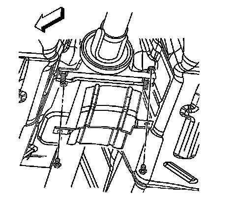

Exhaust Heat Shield Replacement - Center Bearing
Exhaust Heat Shield Replacement - Center Bearing
Removal Procedure
Caution: Refer to Exhaust Service Caution (Service Precautions) .
Caution: Refer to Protective Goggles and Glove Caution (Protective Goggles and Glove Warning) .
1. Raise and support the vehicle. Refer to Lifting and Jacking the Vehicle (Service and Repair) .

2. Remove the bolts securing the center bearing heat shield to the center bearing.
3. Remove the heat shield from the center bearing in the following order:
1. Tilt the heat shield to either side.
2. Slide the heat shield out from between the body, the drive shaft center bearing, and the exhaust pipes.
3. Remove the heat shield from the vehicle.
Installation Procedure
1. Install the center bearing heat shield to the center bearing in the following order:
1. Slide the heat shield in between the body, the drive shaft center bearing, and the exhaust pipes.
2. Align the holes in the heat shield with the holes in the center bearing.
Notice: Refer to Fastener Notice (Fastener Notice) .
2. Install the bolts securing the center bearing heat shield to the center bearing.
Tighten the center bearing heat shield bolts to 8 N.m (71 lb in).
3. Lower the vehicle.